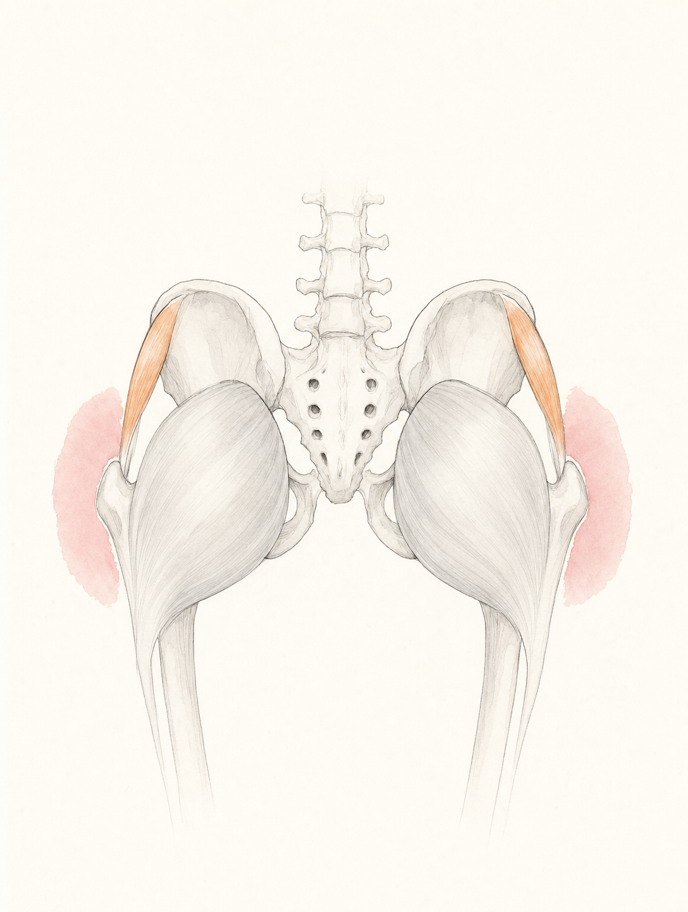

解剖学系列 #008
屁股夹紧——你越用力夹，假胯宽越严重

1 / 9

2 / 9

3 / 9

4 / 9

5 / 9

6 / 9

7 / 9

8 / 9

9 / 9
← 左右滑动浏览全部卡片 →
"屁股夹紧"是普拉提中流传最广的激活口令之一，但它激活的偏偏不是你以为的那块肌肉。臀大肌的外旋收缩会把大转子向外推——正是假胯宽的成因。越夹，越宽。
这组卡片拆解了从"屁股夹紧"到假胯宽的完整力学路径，并还原古典普拉提的正解：深层外旋肌群参与 + 深前线托住骨盆底，而不是表层臀肌的死力收缩。